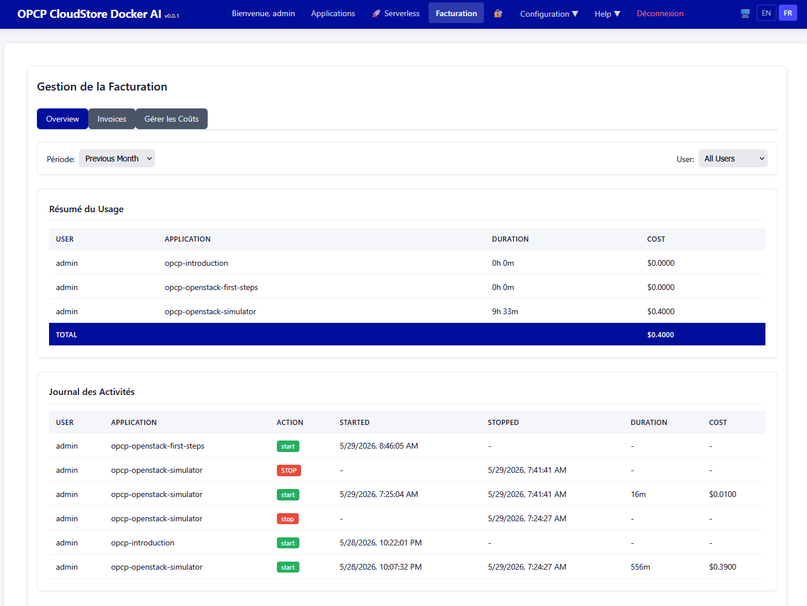

Facturation et suivi des coûts
Apprenez à surveiller la consommation des ressources, suivre les coûts par application et configurer des alertes de facturation pour la plateforme.
Prérequis
- Terminé : Installation sur Ubuntu Bare-Metal
- Plateforme en fonctionnement avec plusieurs applications
- Accès administrateur au tableau de bord de la plateforme
Ce que vous apprendrez
- Comprendre le modèle de coûts (CPU, RAM, GPU, stockage)
- Consulter les rapports d'utilisation par application
- Configurer les alertes et seuils de facturation
- Exporter les données d'utilisation pour le reporting externe
- Optimiser les coûts avec le serverless et l'auto-scaling
Aperçu du modèle de coûts
La plateforme suit l'utilisation des ressources selon ces dimensions :
- CPU — Mesuré en core-heures
- RAM — Mesuré en Go-heures
- GPU — Mesuré en GPU-heures (par slice MIG)
- Stockage — Mesuré en Go-mois (local + S3)
- Réseau — Mesuré en Go transférés
Consultation des rapports d'utilisation
Accédez au tableau de bord administrateur pour consulter les ventilations de coûts par application et configurer des plannings de reporting automatique.

Labo disponible : Un module de laboratoire pratique accompagne cette leçon. Lancez le labo pour vous exercer dans un environnement isolé.